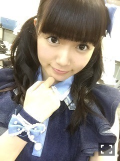
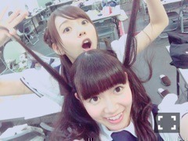
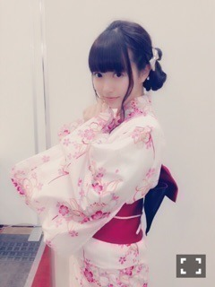

| 2015/07 26 Sun | ひめたん-0o0-その560 |
土曜日曜は京都で握手会でした！
来てくださったみなさん
ありがとうございました( ˇωˇ )♪
■セブンイレブンライブ

全員「太陽ノック」の歌衣装を着ました！
頭と腕のアクセサリーは
ひとりひとり違うんですが
ひめはどっちもリボン(´,,•ω•,,｀)
スタイリストさんの愛を感じます(´,,•ω•,,｀)
セットリストはかなりんブログまで。
バレッタをオリメンで披露できたのが
個人的にグッときました。
あの曲はいつ歌っても
気持ちが入りますね( ˇωˇ )
ひとつのライブにいろんな曲が詰まってて
お腹いっぱいなステージに
なったんではないでしょうか？
名古屋・関東でもやるので待っててね！
あ！かなりん！
もし中元コンプ回収できたら
サイン書かせてください♡
■全国握手会
アンダー曲「別れ際、もっと好きになる」
いかがでしたか？
特徴的なステップが多かったり
フォーメーションがコロコロ変わるのが
観てて面白いと思うの。
曲もMVもそれぞれ印象があるけれど
ライブパフォーマンスにも
注目していただきたいです！
アンダー曲の衣装も可愛いよ～＊
握手会は、まいちゅんとペアでした！

ふおおおおおーー
楽しかったo(^▽^)o
ブースの中で初めて
ボソッと本人に言ったけれど
ひめもまいちゅんカフェ聴いてるよ♪
まいちゅんとは初めてだったので
まいちゅんファンのみなさん
お世話になりました！
ひめに会いに来てくれたみなさん
もちろん嬉しかったよ(´｡•ω•｡`)
終始ほわほわしたレーンでした～
まいちゅんびーむ
ちょっと照れながらやってて可愛かった♡
ライブの感想すぐに聞けるのが
全握の楽しいところだよね。
久々の握手会だったので
じょしらく、新曲、雑誌、テレビ、ラジオ
いろーんなお話ありがとう！
来週の名古屋セブンライブ、全握も
楽しみにしてます！
■個別握手会
1部 編み込み巻きおろし

ROJITAのワンピース
ごめんね、全身写真暗めだったから
アップの写メしか貼れないんだけど
これじゃ全然わかんないよね( ´ ･ω･ ` )
まあ来てくれた人の特権ってことで。
2部・3部

びゃー♡浴衣だよ♡
らじらーで着てた浴衣だよ～
帯は違うやつだよ～
帯飾りもかわいいんだけど
この写メだと伝わらんね～
3部だけ着よっかなって思ってたんだけど
2部からお願い！ってリクエストが
いっぱいあったので急ぎました。
来週の名古屋はどうなるかわかりません
時間次第です(笑)
でも素敵なワンピースも着るよ～？
握手やってて思ったけれど
らじらーって本当にすごい。
みんな聞いてくれてるんだもん！
「びーむ何メートル飛ぶんだっけ？」って
みんな質問してくれるんだもん！
ひめたんおたより読まれないよ～( >_< )
って相談多かったけれど
ほんとに毎週たくさんのおたより来てるから
倍率がすごいわけですよ。
だからこそ、だからこそね！
ぜひ採用されて「っっしゃーー！」ってのを
感じてほしい！
中田さんがいつもボソッと
ラジオネームいじってるの聞いて
密かにニヤニヤしてます......♪
あれ言われたいよね。笑
あとみんな
ひとりノリひめたん好きすぎね。
他にもいろんなお話しました～
猫の目パンデミック。
愛未と私が並んで歌うと乃木團のイメージが
パッと浮かぶと思うけれど
それだけじゃなくてゆる～い歌も
歌えるんだぞ、という作品。あと大喜利←
ひめの歌声って
乃木團とかNOGIBINGOのカラオケとかで
パンチのあるイメージあると思うんだけれど
というか実際張り上げて歌うクセあるけれど
君僕とか別れ際とかは
もうちょっと優しく歌ってるので
聴き分けできるかな～(｡•ω- ｡)？
ツアーの報告もありがとう！
6都市16公演頑張ります！
真夏らしく熱いツアーにしましょう！！
ひめたんのサイリウムカラーは
ぴんく
×
ぴんく
でお願いします♡

らじらーリアルタイムで聞いてて
声優アーツのゲストがゆいかおりさんって
聞いて思わず声出ちゃった(´｡･v･｡｀)
どうしよう。
とりあえず興奮して
マネージャーさんにメールしちゃったよね。
実はファンなんです！！
いつかお会いできたらなって思ってたの！
ふああ～～♡
そして乃木坂回ですが、
なんと初の試み......
私がメインMCに挑戦します！！
オリラジさんのお二人が
ゲストという形で
私がホストというわけですね。
緊張する～大丈夫かな～
アシスタントとしてこの数ヶ月間
お二人から学んだことを活かせるよう
頑張ります⊂( ˆωˆ )⊃
テンパって赤面してる私が好きな
ドSなリスナーさんにとっては
神回決定だね♡♡
あとあれだよ、浴衣回だよー！
最後に、前回の日記に
コメントたくさんありがとう！
Mステ感動しちゃったよ～って
たくさん言われて私も嬉しかった( ´•̥ω•̥` )
びーむ届いたみたいでよかったです。
ヤングアニマル、samurai ELO
どちらも好評みたいで安心しました～♪
このあとの乃木中チラッと出るよ！
(＊´・ω・＊)
コメント(676)
2015/07/26 23:30